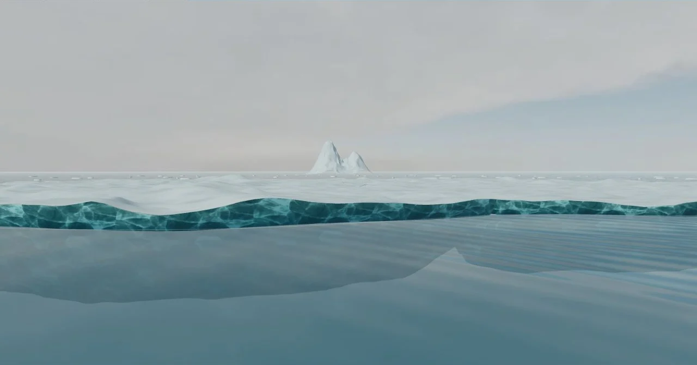
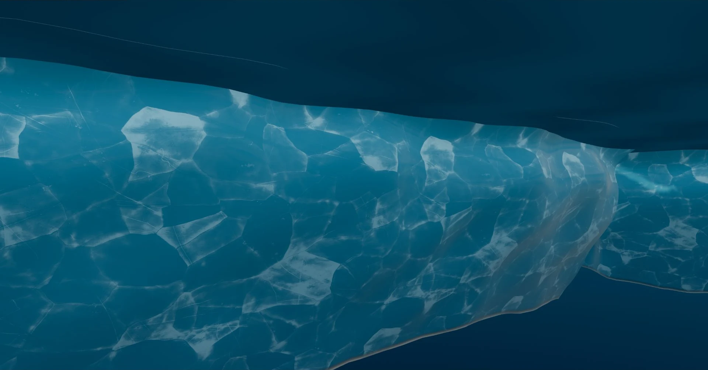
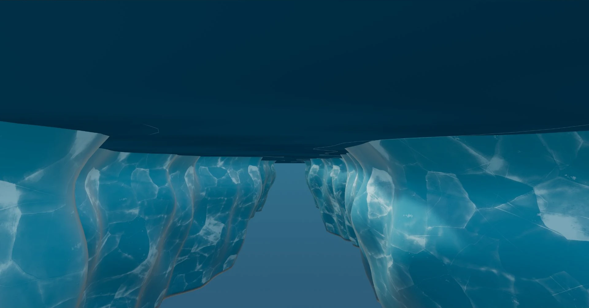
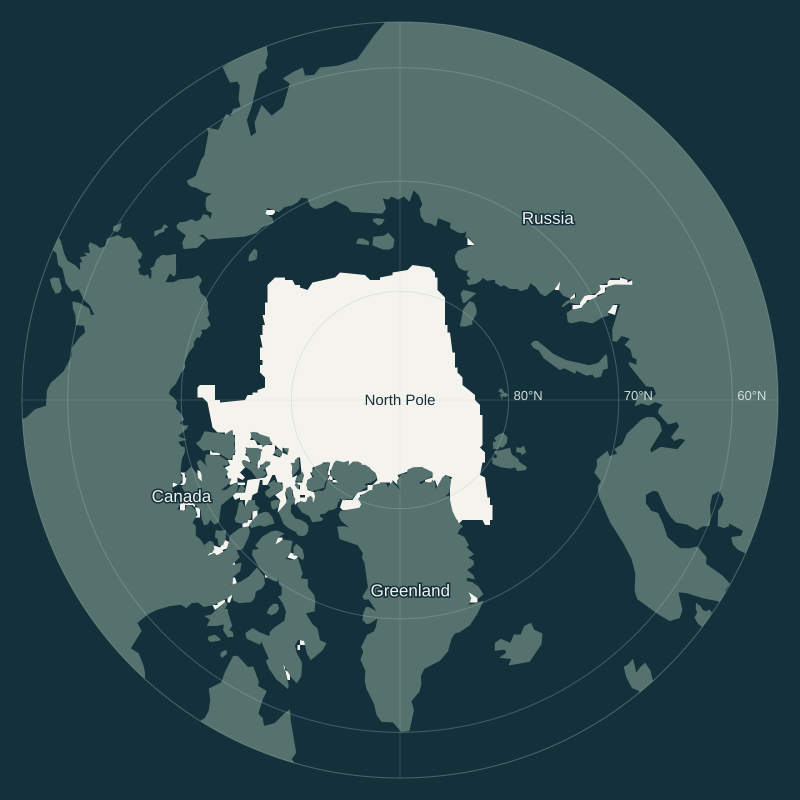
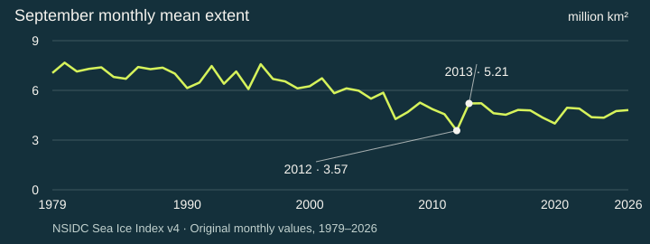
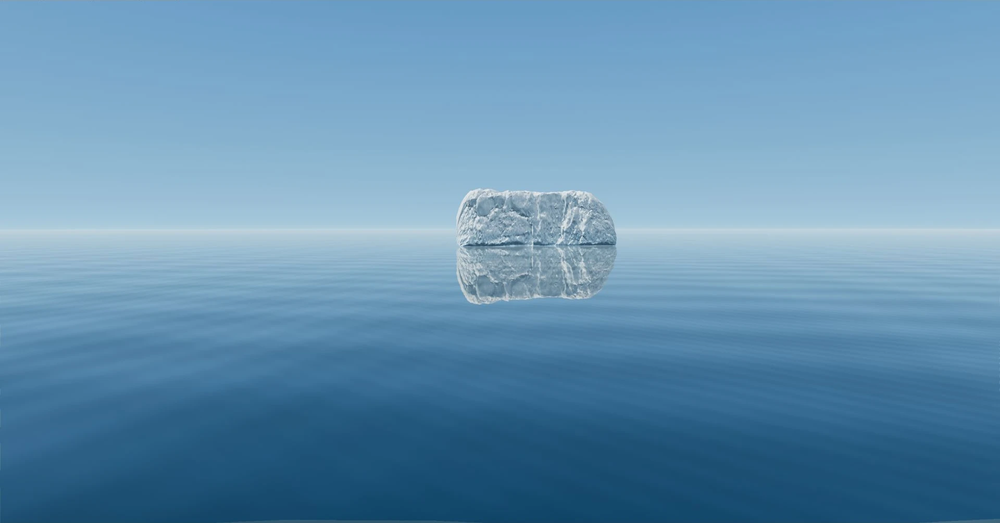
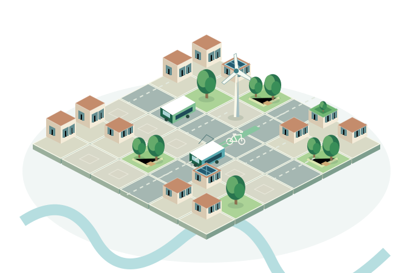
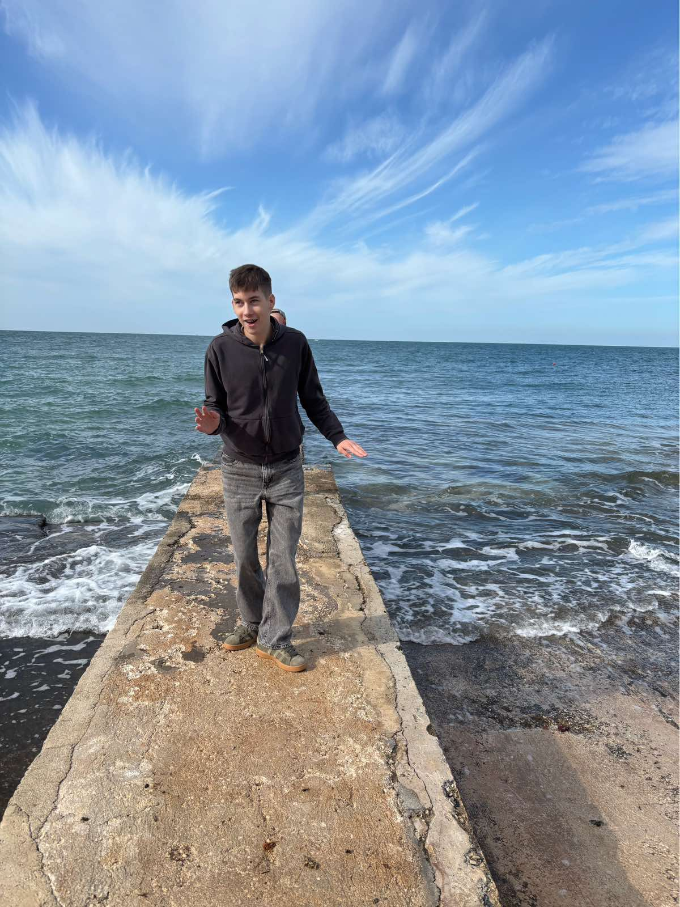

Rise in Slovenia’s annual mean temperature since 1970, according to ARSO.
Where’s
the shade?
As the planet warms, shade matters more. We started with two city views and a question about where people can cool off.
Explore the photographsHow shade connects to SDG 13
Look between the rooftops. The George Town photograph shows patches of tree cover, while the Manhattan view is dominated by buildings and paving. Trees shade streets and cool the air around them, helping neighbourhoods adapt to hotter days.
Read more: How trees cool cities · SDG 13, target 13.1
From Tenerife to the Alps
What’s changing in Slovenia?
Read the temperature and glacier records behind the photographs.
The Arctic in September
See how warming changes sea ice, from the ice edge to the satellite record.
Make a cooler neighbourhood
Try a shade challenge in our city game.
Mark Kobal & Lovro Trošt
A COIL project by two students at ERŠ Nova Gorica.
About the project →Our 12 photographs
A lake in the Alps, floodwater near Komenda and a view across New York. Explore the photographs and the climate questions behind them.
12 photographsSelect a photograph to read its caption
No photographs match this category. Choose another filter.
How is Slovenia’s climate changing?
The photographs show individual places and moments. These records show how temperatures, glaciers and flood risk are changing over time.
Comparable mapped area in 1946 and 2024. Open the glacier notes for later observations.
Warming is one part of the picture. Rainfall, river channels, buildings and land use also matter.
The long-term records for Slovenia
Open a topic to see the measurements, photographs and sources we used.
Follow the long-term trendARSO annual data & 2026 update
in Slovenia since 1970
ARSO estimates that Slovenia's annual mean temperature has risen by about 2.7 °C since 1970.
Read ARSO climate data ->Each bar covers January–December, including all of 2025.
ARSO: 2025 annual report ↗October 2026
+0.5°CLatest published month: above the October 1991–2020 average. This is a monthly figure, not a full-year result.
ARSO: monthly report ↗About these figures
National temperature anomalies from the Slovenian Environment Agency (ARSO). The 2025 report covers all twelve months, but ARSO still describes its estimates as provisional; the October 2026 estimate is also provisional. Monthly and annual figures use their respective 1991–2020 averages.
Sources checked on . The latest monthly report was published on 4 November 2026.
See the change in our mountainsMapped area, photographs & field notes
The last visible ice of the Triglav Glacier disappeared in October 2026.
Regular measurements began in 1946, when the glacier covered about 14 hectares. GOV.SI reported a mapped area of 0.2 hectares in 2024, the latest comparable area figure in that summary. A 2022 radar survey found an average ice thickness of 1.4 metres.
Field notes & sources
A field observation on 25 September 2026 described the last visible remnant of the glacier’s main body as only a few square metres: about 5 metres along its longest side and around 0.5 metres thick at its thickest point. Photographs taken on 19 October and reported on 27 October showed that the last visible surface ice had disappeared. This later observation updates the September forecast; it is not a new mapped-area measurement comparable with the 1946 and 2024 figures.
Historical area and radar measurements: GOV.SI -> September 2026 field observation: RTV Slovenija / STA -> September 2026 researcher update: GOV.SI / STA -> October 2026 report and photographs from the institute: The Guardian ->Same scale: the 2024 mapped area was about 1.4% of its 1946 extent. Later observations are described separately in the field notes.
Understand heavy rain and flood riskWhat warming can influence & what else matters
Can rising temperatures contribute to floods?
Yes, they can increase the risk. Warmer air can hold more water vapour, which can lead to heavier rainfall when weather systems bring rain. Intense rainfall can overwhelm streams, rivers and drainage systems.
But warming does not cause every flood on its own. The outcome also depends on where and how long it rains, the terrain, soil conditions, rivers and how land is used. We should describe climate change as a factor that can raise some flood risks, not as the sole explanation for a particular event.
183 / 212Slovenian municipalities were affected by the August 2023 floods.
~€3 billionin direct damage was reported by the Slovenian government.
Europe’s temperature recordCopernicus · 1950–2025
What causes warming?Background, 2025 snapshot & sources
Why rising temperatures matter to us
Burning coal, oil and gas drives global warming and increases the risk of hotter days and heatwaves. Trees, shade and cool public spaces can help during hot weather. Cutting emissions limits future warming; preparing our streets and buildings helps with the heat we already face.
OUR SOURCES
United Nations — Goal 13: Climate Action
IPCC — Synthesis Report: Summary for Policymakers (PDF)
Learn more about SDG 13 →
Compare two days of weatherToday and ten years ago
What was the weather like ten years ago?
Compare today’s forecast with the same calendar date ten years earlier.
Right now—Loading current weather…
Today
—
—
Daily average temperature
Loading conditions…
- Lowest temperature
- —
- Highest temperature
- —
- Average humidity
- —
- Maximum wind
- —
- Total precipitation
- —
10 years ago
—
—
Daily average temperature
Loading conditions…
- Lowest temperature
- —
- Highest temperature
- —
- Average humidity
- —
- Maximum wind
- —
- Total precipitation
- —
DAILY AVERAGE DIFFERENCE—
Waiting for both days…
This compares two days of weather. The records above show how climate changes over decades.
About the data
Today’s daily values are forecasts and may change. The current reading is shown separately. The earlier day uses ERA5 reanalysis for a model grid cell near the city, rather than an official weather station. Current conditions are also modelled.
Daily precipitation is the full-day total; current precipitation covers the preceding 15 minutes. Daily humidity is the mean of available hourly readings. Dates follow the selected city’s local calendar. The earlier day uses the same month and day; 29 February maps to 28 February when necessary.
Climate describes patterns over decades, usually at least 30 years. A comparison of two days cannot establish a climate trend.
Sources: Open-Meteo forecast and current weather · Historical weather · ERA5, Copernicus/ECMWF
Follow the Arctic sea-ice record or see how cities are adapting.
COIL · Climate action
The Arctic
in September.
Warming affects snowy mountains as well as Arctic sea ice. Follow the ice edge from water level up to the September satellite record.
Scroll at your own pace, or choose a chapter.

Illustrated sea-ice processes
At the ice edge
Polar bears use sea ice as a hunting ground. As the ice retreats, their habitat changes.
Map: September monthly mean · NSIDC / Natural Earth
1 / 6
Illustrated sea-ice processes
At the ice edge
Polar bears use sea ice as a hunting ground. As the ice retreats, their habitat changes.

Illustrated sea-ice processes
Heat beneath the surface
A warming atmosphere and ocean reach the ice from both sides, melting it above and below the surface.

Illustrated sea-ice processes
More open water
White ice reflects sunlight. Dark water absorbs more of it, reinforcing warming as the opening widens.

Satellite observations
1979 onward
From a single crack to the whole Arctic. Satellites reveal a long decline in September sea-ice extent, with increases in some individual years. Explore the record below.
September, year by year
Monthly mean extent million km²

Explore the full satellite record, including years with more ice than the year before.
NSIDC data (CSV) · Extent counts ocean with at least 15% ice cover.
Daily observation
September 2026
Estimated Arctic sea-ice extent at its annual minimum, 12 September 2026.
4.60 million km²NSIDC minimum estimateDaily minimum; the September monthly mean is 4.81 million km².
Projection · IPCC AR6
Before 2050
Across the assessed emissions scenarios, the Arctic is likely to experience at least one practically ice-free September before 2050.
Practically ice-free means less than one million square kilometres of sea-ice area.
How often that September returns depends on how much more the world warms.
IPCC AR6 Working Group I, Chapter 9Take actionAbout the illustration and data
The close-up illustrates sea-ice habitat and change. The animals fade as the camera moves on; this is not a dated population record. The opening and closing use the same camera position and landmark.
The satellite record uses NSIDC Sea Ice Index Version 4 September monthly means in million km², preserved in the original downloadable CSV. NASA Blue Marble supplies the land colours and relief, from its September 2004 composite. It is a fixed land basemap, not a photograph of the selected year. Natural Earth land and NSIDC ice-edge outlines use polar stereographic north (Hughes 1980). The displayed ice boundary is gently rounded to soften the grid-cell steps; the original outlines and chart measurements are unchanged. The 3D view uses illustrative ice textures and lighting. Its palette changes with September extent, and the dashed line traces the edge from September 1979. The 2026 daily minimum is a separate NSIDC estimate; it is not a September average.
Sea-ice extent and sea-ice area are different measures. The IPCC’s practically ice-free threshold refers to area. The projection is not a prediction that every September will be ice-free from a fixed date.
Sea ice and the climate · Sea ice and polar bears · Ocean warming · NSIDC Sea Ice Index · NASA Blue Marble · NASA Earth Observatory / Reto Stöckli · Natural Earth · IPCC AR6 WGI, Chapter 9
Closer to home, see how cities are making streets cooler as temperatures rise.
See what cities are doingWhat three cities are doing
A school street in Paris, an expanding business area in Ajdovščina and the shade gap in Phoenix.
Paris, France
A school street without through traffic
Before: an asphalt road and narrow pavements beside the school. After: a wider pedestrian space with planted beds. The slider changes how much of each photograph is visible.
- The challenge
- Rue de la Brèche-aux-Loups gave much of its space to an asphalt roadway beside a school.
- What changed
- Paris replaced the roadway here with pedestrian space and planted beds through its school-street programme.
- What we can see
- The before-and-after photographs show more planting and room to walk. Greening and lighter surfaces are also part of the city’s response to urban heat.
- What remains
- New planting takes time to mature. These photographs document a redesign; they do not measure a temperature reduction on this street.
Ajdovščina, Slovenia
Can an industrial town grow greener?
- The challenge
- Business-zone expansion creates a need to consider energy, transport, land use and green space together.
- What changed
- The Gobi infrastructure project included a solar installation and EV charging. Separately, Zelena Ajdovščina invested in planting across the town and surrounding area.
- What is documented
- Government records confirm the infrastructure project’s completion in 2024. The greening programme received a €1 million donation from Taja and Ivo Boscarol.
- What remains
- These sources document projects and investment, rather than a measured net reduction in the town’s emissions or an increase in total green cover.
Sources and local context
Industrial growth
Government report · printed page 35 ↗Investing in greenery
Municipal greening programme ↗Existing trees matter too. The municipality highlights Lokarjev park, with 50 mature trees, and Šturski park for their dense shade.
Local guide to shade ↗Recognised sustainability efforts
Ajdovščina holds the Slovenia Green Destination Silver label. This designation assesses sustainability in tourism; the town’s wider climate progress also depends on energy, transport and land-use decisions.
Slovenian Tourist Board ↗Phoenix, Arizona, USA
Who gets shade in Phoenix?
- The challenge
- Phoenix’s shade plan prioritises vulnerable residents and exposed everyday routes, including walks to work, bus stops and parks.
- What changed
- The city adopted Shade Phoenix in November 2024, combining trees with built shade and a focus on underserved communities.
- Reported progress
- For July 2024–June 2025, the city reported over 7,200 trees planted, a net addition of over 5,500 trees, and 155 new shade structures.
- What remains
- Five of the plan’s 36 actions had not fully met their first-year milestones. Maintenance, staff capacity and contracting delays were among the issues reported. Progress is real; the work is unfinished.
Compare the three approaches
These examples have different climates, scales and reporting periods. We compare approaches and evidence, not a temperature ranking.
| Question | Paris | Ajdovščina | Phoenix |
|---|---|---|---|
| Main approach | Reclaim a school street | Industrial infrastructure and greening | Expand trees and built shade |
| Potential benefit | More planting and space to walk | Support lower-emission energy and protect greenery | Reduce exposure along everyday routes |
| Evidence shown | Same-street before/after photos | Completed project and greening funding | Reported planting and shade installations |
| Still to address | Planting maturity and measured local outcomes | Town-wide emissions and green-cover outcomes | Unequal access and long-term maintenance |
What would help near your school: fewer cars, more trees or shade at a bus stop? Choose your priority ↗
What helps on hot days?
Try a heatwave decision in the city game, then choose what would help where you live.
Build your green city
Meet a resident and see how adding shade changes their neighbourhood. Then build a city of your own.
Build your green city
How can we make hot days safer?
Three questions about shade, heat and climate evidence.
What would help our community most?
Choose the change you would make first.
Shared results
Loading shared results…
About this poll
Everyone using the same classroom link shares these results. Your browser remembers a random voting key so changing your answer updates your existing vote. The poll stores only a hash of that key and your choice, without names or cookies. Results refresh every 30 seconds while open. This is one vote per browser, rather than verified voting per person.
Three ways to prepare for hotter days
Find and protect shade
Protect existing trees, plant where suitable and choose shaded routes on hot days.
Look out for one another
Check on people who may be more affected by heat and follow local heat advice.
Limit future warming
Save energy and choose walking, cycling or public transport for suitable journeys.
Build your green city
Start by making one neighbourhood cooler.
The city tools could not load. Reload the page to try again.
Cool the block
Meet a resident, find a spot for greenery, and see how much more shade it gives their home.
New TerraPresentation city
TREASURY6,000 EPMonthly budget
RESIDENTS220Housing capacity
Month 1Spring / Year 1
•••
One day lasts about 3 minutes. Switch off to hold the light; use the moon button for a fixed day or night view.Preparing connected journeys…Saved on this device
Preparing your island…
New Terra28 × 28Day · 12:00
ISLAND OVERVIEW
Explore your island.Drag to pan · Scroll to zoom · Right-drag to orbit
Mark & Lovro
We’re both students at ERŠ Nova Gorica. This is our photography and climate project for COIL.

Mark Kobal
I’m Mark, a student at ERŠ Nova Gorica. I worked on the climate research and photo editing, and helped put the website together.
Lovro Trošt
I’m Lovro, a student at ERŠ Nova Gorica. I worked on the website and city-building game, alongside our climate research.
About the project
Our project connects three things: what a photograph shows, what longer climate records show, and decisions people can make about their surroundings.
The gallery is the starting point. The evidence and city examples add context; the quiz, poll and city game give classmates something to try and discuss.
See our photographs →